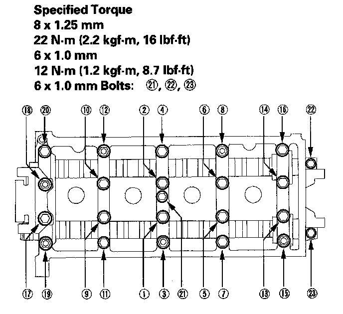
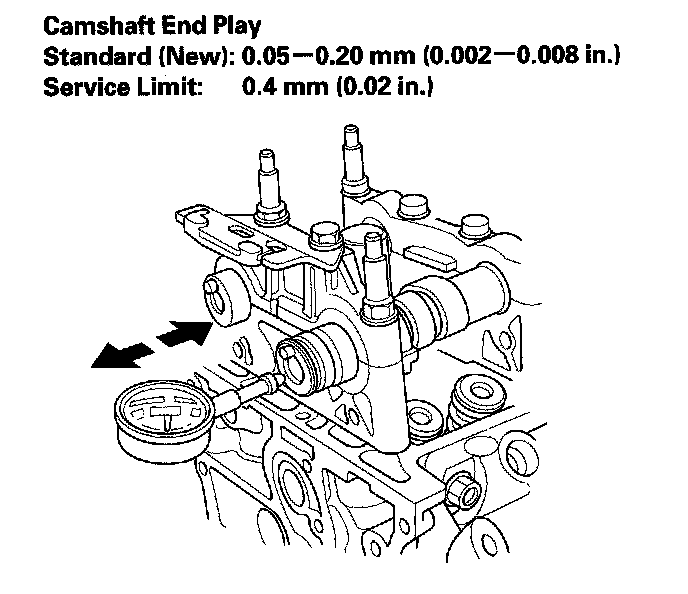
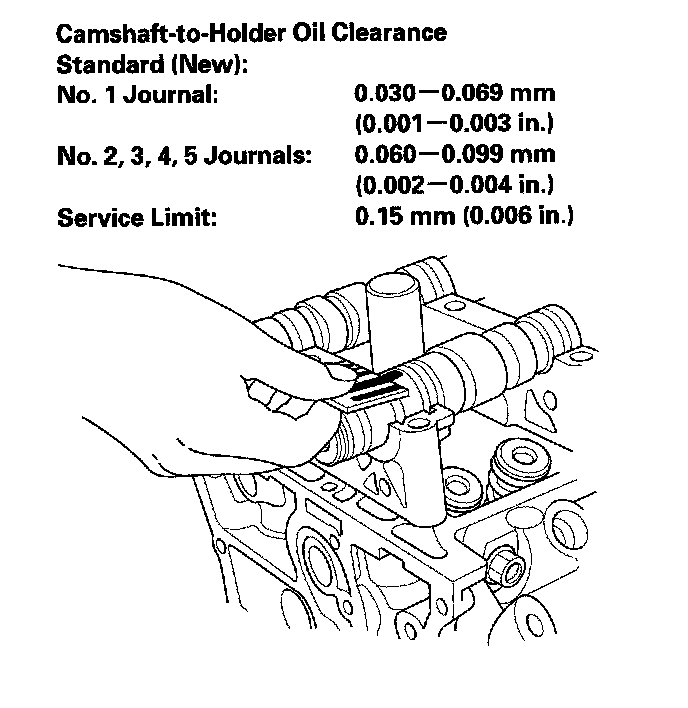
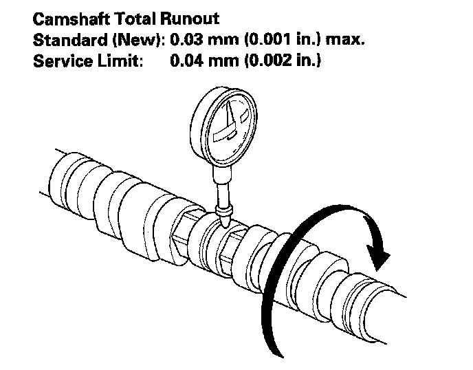
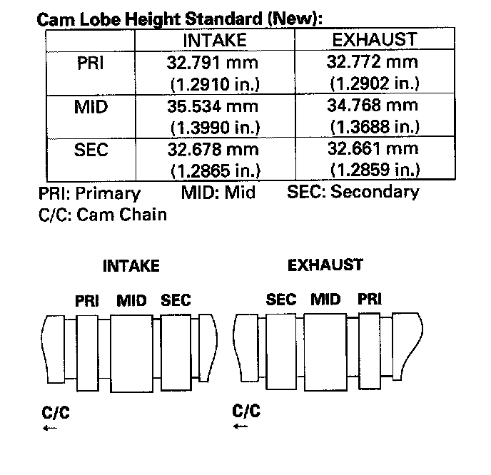

Camshaft: Service and Repair
Camshaft InspectionNOTE: Do not rotate the camshaft during inspection.
1. Remove the rocker arm assembly.
2. Put the rocker shaft holders, camshaft, and camshaft holders on the cylinder head, then tighten the bolts in sequence to the specified torque.
NOTE: If the engine does not have bolt (21), skip it and continue the torque sequence.

3. Seat the camshaft by pushing it away from the camshaft pulley end of the cylinder head.
4. Zero the dial indicator against the end of the camshaft, then push the camshaft back and forth and read the end play. If the end play is beyond the service limit, replace the cylinder head and recheck. If it is still beyond the service limit, replace the camshaft.

5. Unscrew the camshaft holder bolts two turns at a time, in a crisscross pattern. Then remove the camshaft holders from the cylinder head.
6. Lift the camshafts out of the cylinder head, wipe them clean, then inspect the lift ramps. Replace the camshaft if any lobes are pitted, scored, or excessively worn.
7. Clean the camshaft journal surfaces in the cylinder head, then set the camshafts back in place. Place a plastigage strip across each journal.
8. Install the camshaft holders, then tighten the bolts to the specified torque as shown in step 2.
9. Remove the camshaft holders. Measure the widest portion of plastigage on each journal.
^ If the camshaft-to-holder clearance is within limits, go to step 11.
^ If the camshaft-to-holder clearance is beyond the service limit and the camshaft has been replaced, replace the cylinder head.
^ If the camshaft-to-holder clearance is beyond the service limit and the camshaft has not been replaced, go to step 10.

10. Check the total runout with the camshaft supported on V-blocks.
^ If the total runout of the camshaft is within the service limit, replace the cylinder head.
^ If the total runout is beyond the service limit, replace the camshaft and recheck the camshaft-to-holder oil clearance. If the oil clearance is still beyond the service limit, replace the cylinder head.

11. Measure cam lobe height.
